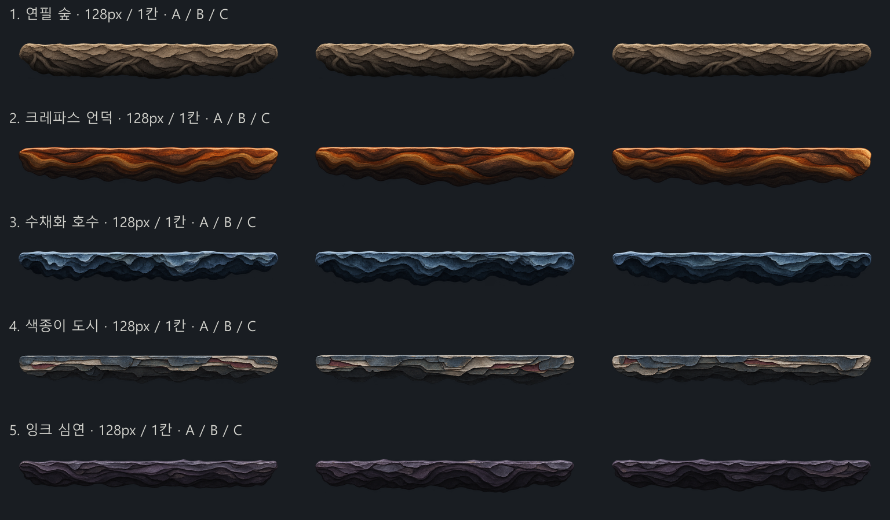
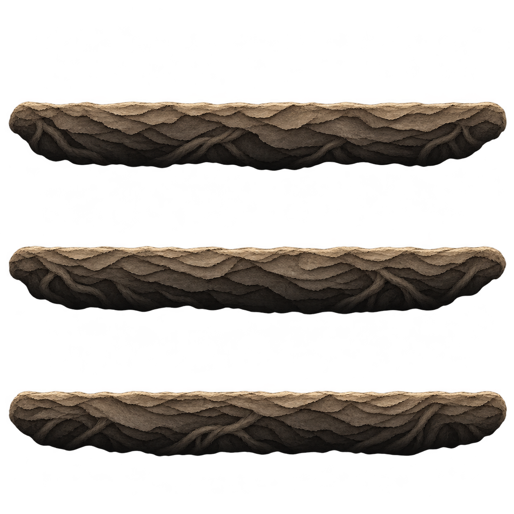
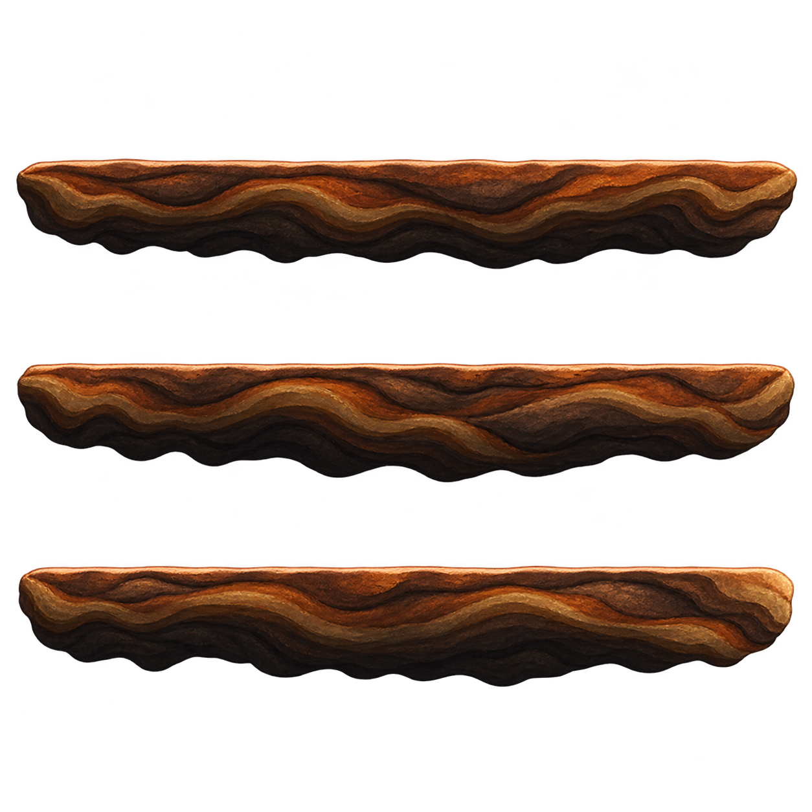
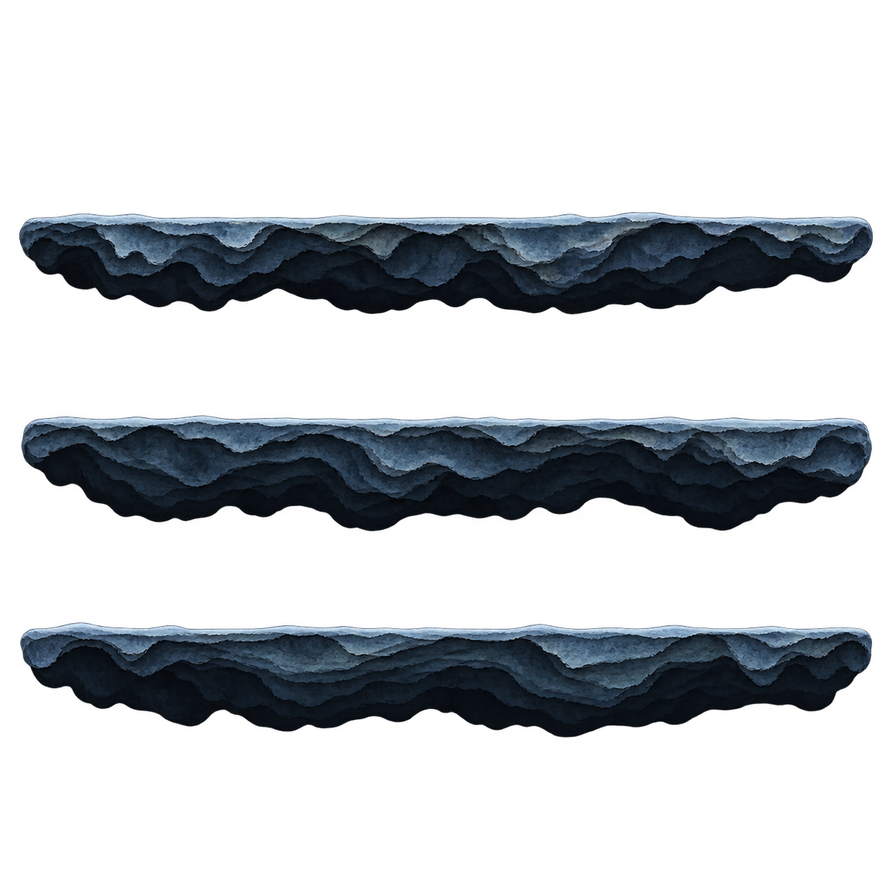
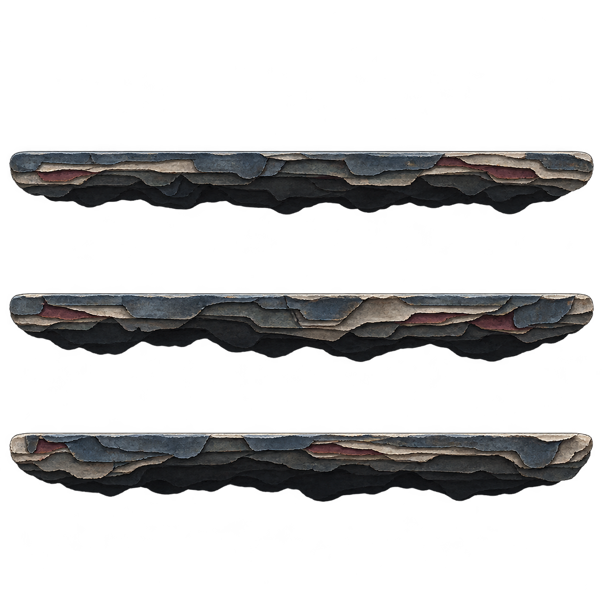
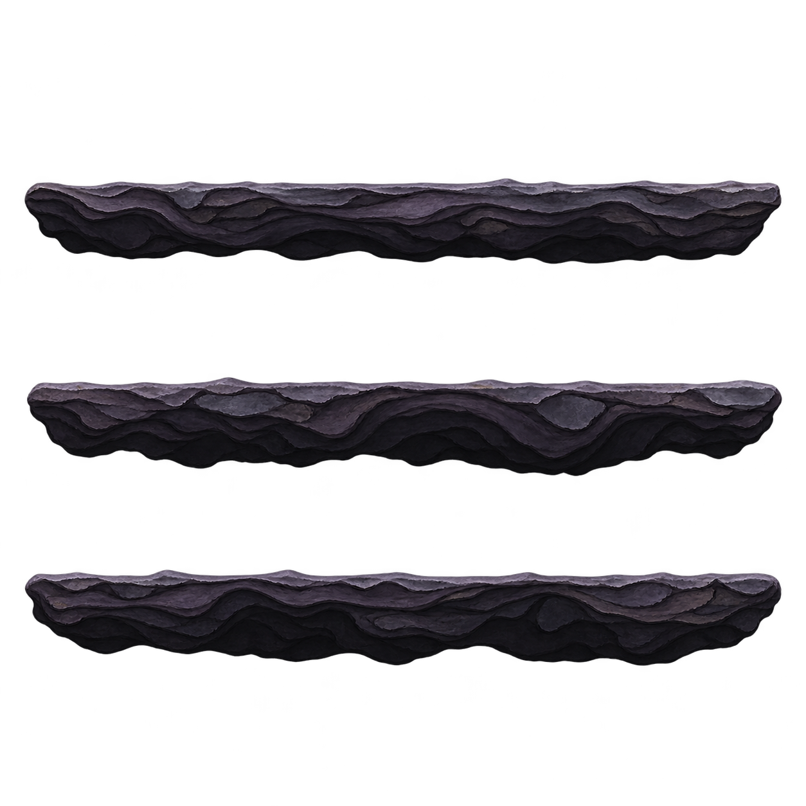

지역별 한 칸 발판
전체 5지역 · 지역당 3가지 원화 · 폭 128px / 1유닛
현재 맵의 얇은 통과형 발판을 위한 디자인 시안입니다. 둥근 끝과 작은 윗면 요철, 어두운 밑면으로 구성했습니다. Unity 1·2지역에 적용했고, 3~5지역은 에셋으로 준비했습니다.

연필 숲
실제 한 칸 크기 · 128px
원화 세 가지 보기

크레파스 언덕
실제 한 칸 크기 · 128px
원화 세 가지 보기

수채화 호수
실제 한 칸 크기 · 128px
원화 세 가지 보기

색종이 도시
실제 한 칸 크기 · 128px
원화 세 가지 보기

잉크 심연
실제 한 칸 크기 · 128px
원화 세 가지 보기

제작 기준과 생성 프롬프트